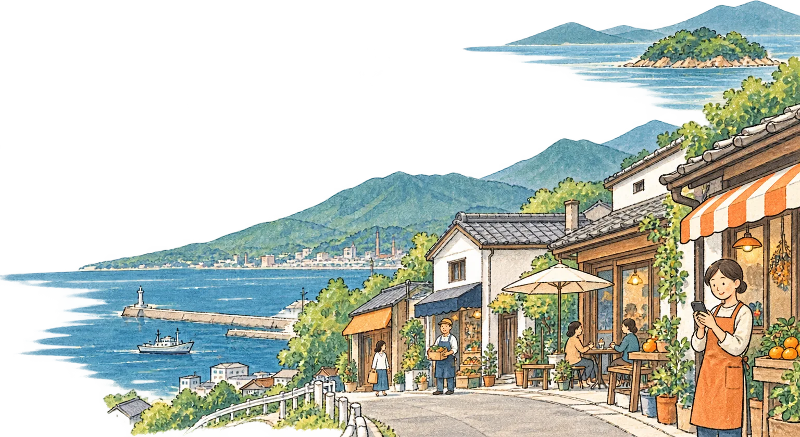
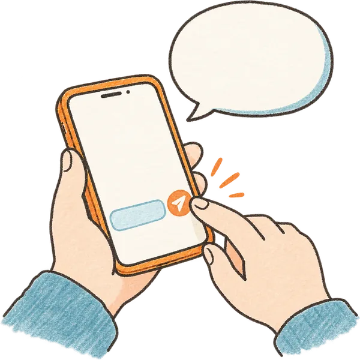
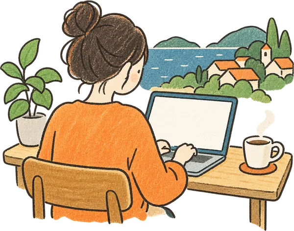
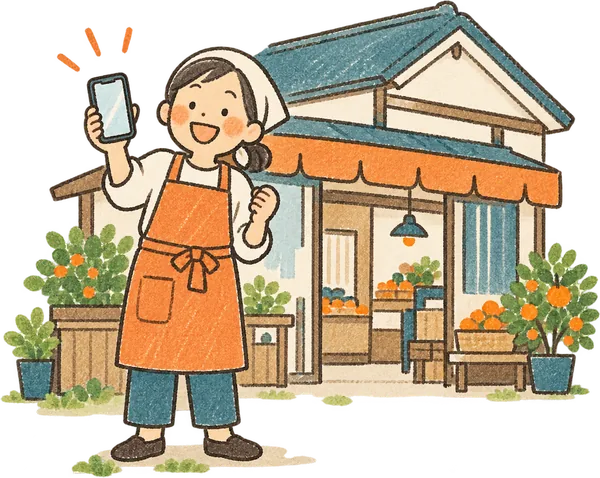
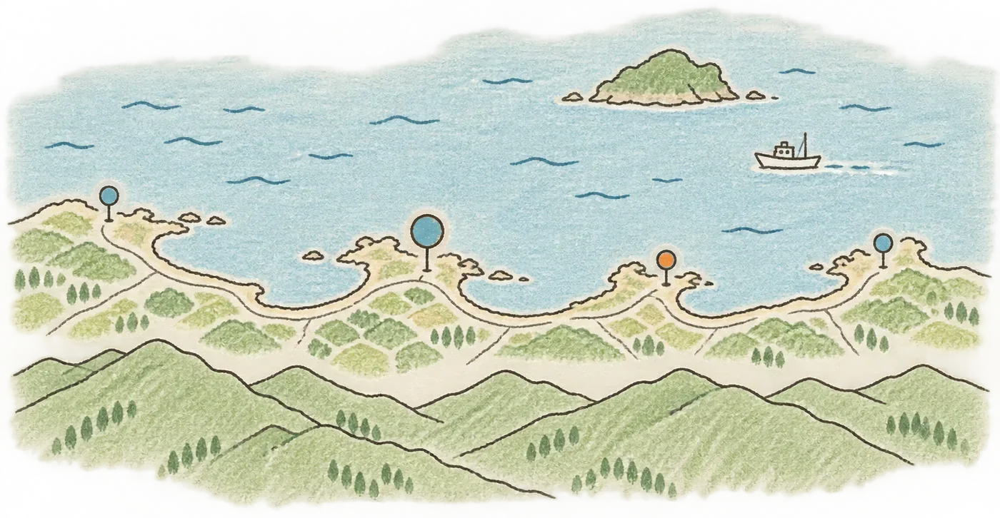

新居浜・西条・四国中央・今治のお店へ
お店のこと、 ちゃんと伝わる ホームページを。
新居浜市を中心に、西条・四国中央・今治のお店や小さな会社のホームページ・LPをつくっています。
相談・デモづくりは無料です。無理な売り込みはしません。

こんなこと、ありませんか？
- 営業時間や定休日を、インスタのDMで毎回聞かれる
- 昔つくったホームページ、もう何年もさわってない
- 制作会社に頼むと、高そうで気がひける
- パソコンは苦手。専門用語もようわからん
- お店の名前で検索しても、うまく出てこない
どれも、よくあるご相談です。
むずかしい話は抜きにして、ひとつずつ一緒に整えていきましょう。
お店に合わせて、必要なぶんだけ。
全部そろえなくても大丈夫です。お店の状況を聞いてから、「これならちょうどいい」という形をご提案します。
-

いちばん多いご相談ホームページ制作
メニュー、営業時間、アクセス、お店の想い。お客さんが知りたいことを、スマホでさっと見られる形にまとめます。
-

1枚で完結するページLP（ランディングページ）制作
新メニューやキャンペーン、教室の生徒募集、求人など。伝えたいことをひとつにしぼった縦長の1ページです。
-

古いサイト・チラシしかない方もリニューアル
何年も前のホームページや紙のチラシを、今のスマホで見やすい形につくり直します。載せる内容の整理からお手伝いします。
大切にしていること
-
近くにいるから、話が早い
わたしも新居浜で暮らしています。東予の土地の感じやお客さんの雰囲気がわかるので、説明が少なくてすみます。
-
つくる前に「デモ」を見てから決められる
お店に合わせたトップページのデモを先におつくりして、スマホで見てもらいます。イメージと違えば、そこでお断りいただいて大丈夫です。
-
つくったサイトは、あなたのもの
ホームページの住所（ドメイン）やデータは、お店の名義で持っていただきます。あとから自分で管理したくなっても、いつでもお引っ越しできます。
料金のめやす
お店の規模やご予算に合わせてご提案します。「この金額の中でできること」からのご相談も大歓迎です。
ホームページ制作
5,000円〜税込
1ページのホームページ・LPから。ページや機能は、必要なぶんだけ足せます。
- つくる前の無料デモ
- スマホ・パソコンどちらでも見やすく
- 地図・LINE・電話・予約へのボタン
- 修正3回まで
公開したあとは
- 自分で管理する 月0円
- 更新をまかせる 月3,000円〜
- 記事づくりまでまるごと 月5,000円〜
- どれもいつでも切りかえ・解約できます
サーバー代は原則かかりません。ドメイン代（年間数千円ほど）は実費です。
くわしくはサービス・料金へご依頼の流れ
-

その1お問い合わせ
LINE・フォーム・メール、どれでも。「まだ決めてない」でもOKです。
-
 その2
その2お話を聞かせてください
ご希望であればオンラインで30分ほど。基本的には文字のやりとりだけで大丈夫です。
-
 その3
その3無料デモ・お見積り
お店に合わせたデモをスマホで見てもらいます。ここまで費用はかかりません。
-

その4ご契約・制作
確認用のページをスマホで見ながら、気になるところを伝えてください。
-

その5公開・その後
公開後は、更新をまかせるか、自分で管理するかを選べます。
よくある質問
パソコンが苦手でも大丈夫？
大丈夫です。やりとりはLINEやスマホで完結できますし、専門用語は使わずにお話しします。写真もスマホで撮ったもので十分です。
月々いくらかかるの？
ご自身で管理される場合は月0円です（ドメイン代の年間数千円のみ）。更新をまかせていただく場合は月3,000円〜、お知らせ記事づくりまでまかせていただく場合は月5,000円〜です。
途中でやめたくなったら？
更新をまかせるプランは、最低契約期間なしでいつでも解約できます。解約するときは、ホームページのデータ一式をお渡しします。
東予のお店なら、どこでも。

今治市 西条市 新居浜市 ここにいます 四国中央市※地図はイメージです。ほかの地域の方も、オンラインでご相談いただけます。
まずは雑談からでも、どうぞ。
「うちの場合はいくらくらい？」「そもそも必要？」
そんなご相談からで大丈夫です。
いつでもお問い合わせ下さい。返信は原則24時間以内にさせて頂きます。
返信時間帯：基本7時頃〜20時頃／平日・土日問わず
お電話でのご相談は受け付けていません。LINEなら営業中でも気軽に送れます。